Case study 10 · Motion · Spatial reasoning
Double Cam Mechanism
I cut and assembled the box, axle supports, cams, handle, and push-rod tubes around one shared axle. One follower moved the way I intended. The other did not, and testing led me back to two causes: the axle holes were slightly out of line and the tube supports were too tight.

The brief
Could I turn flat paper parts into a mechanism where one axle drove two cams and lifted two followers?
How I approached it
- 01
I laid out and cut every part, including the box, cams, handle, supports, and push rods.
- 02
I assembled the outer box and made openings for the axle and both moving rods.
- 03
I added the tube supports, attached the cams to the axle, and connected the handle.
- 04
I turned the handle, compared both sides, and traced the failed motion back to alignment and friction.
From the build
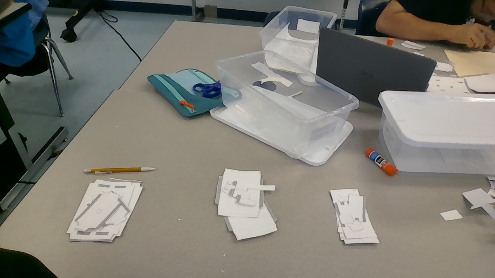
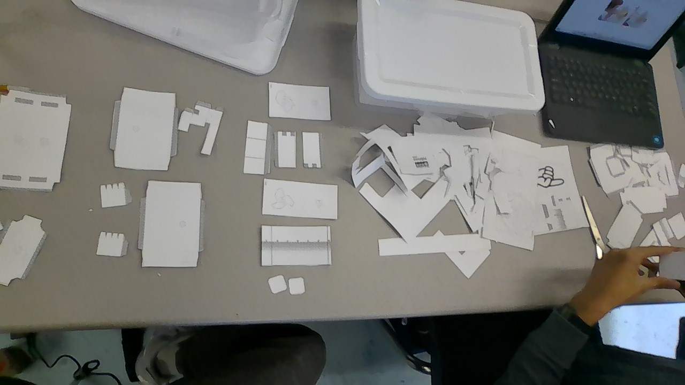
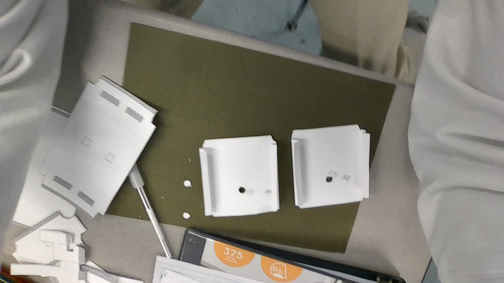
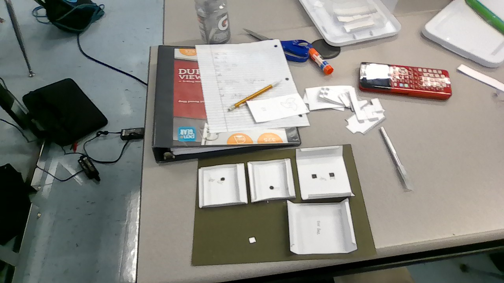
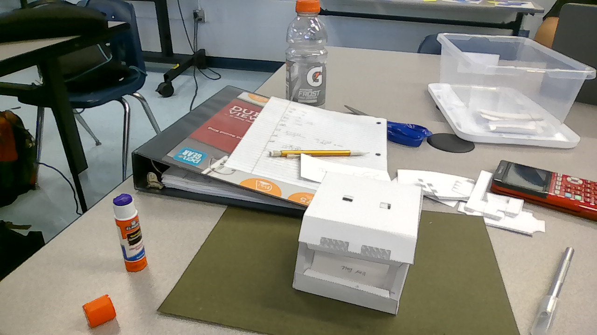
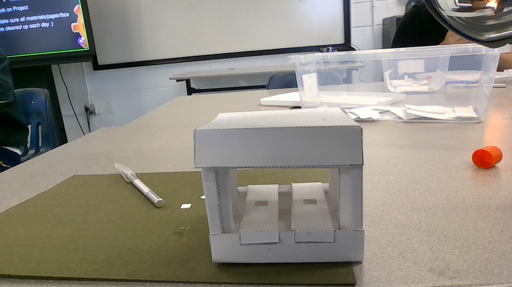
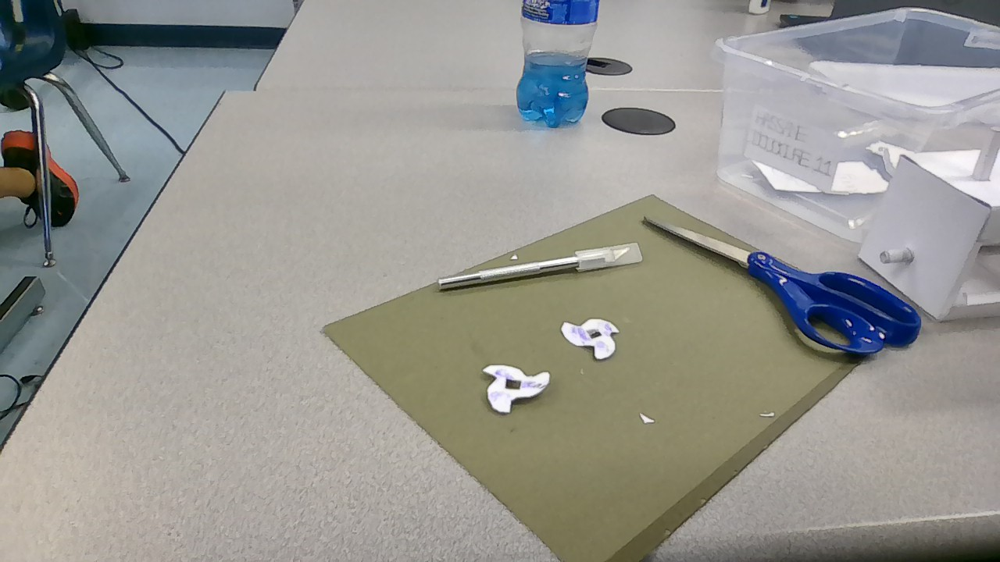
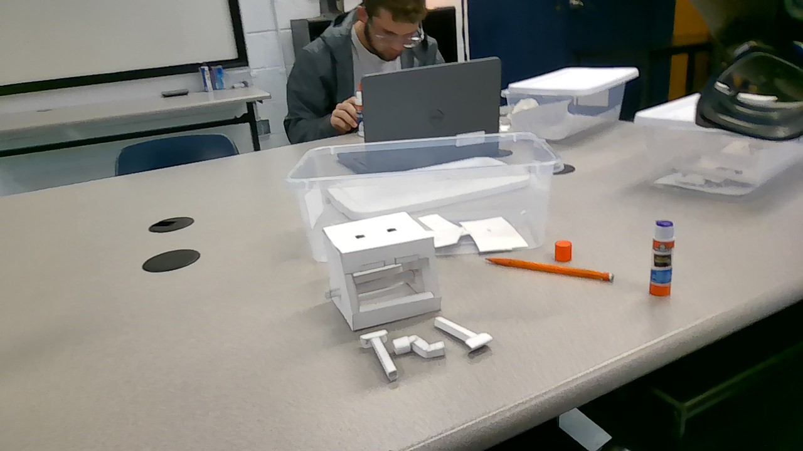
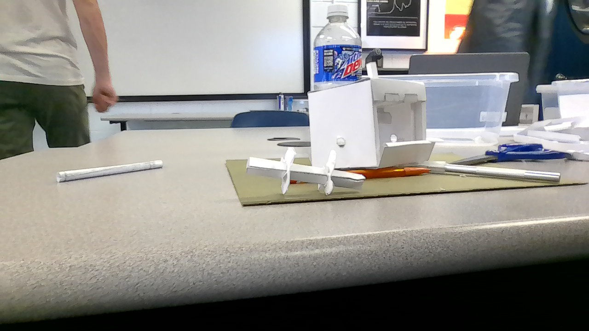
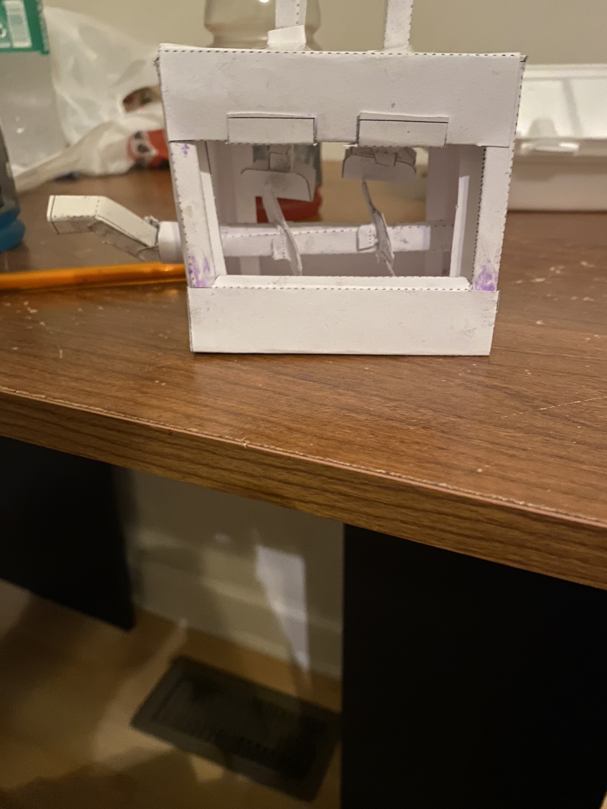
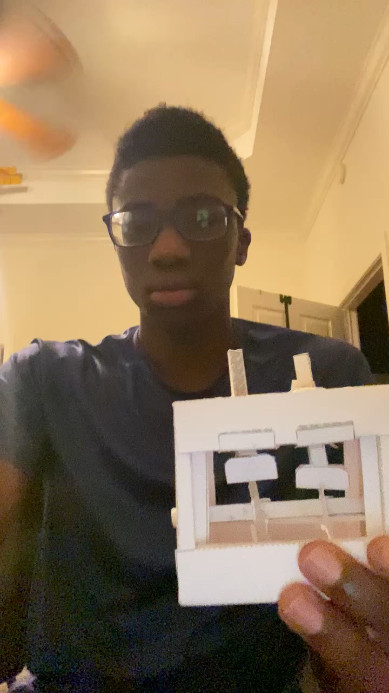
What worked
- Complete paper mechanism
- One working cam and follower
- Alignment problem identified on the second side
What I learned
The parts looked close enough by eye, but the mechanism disagreed. A small offset created enough friction to stop one follower, which showed me how precise alignment has to be in a moving system.
If I built it again
I would use an alignment guide for the axle holes, loosen the push-rod supports, and test both sides before closing the box.